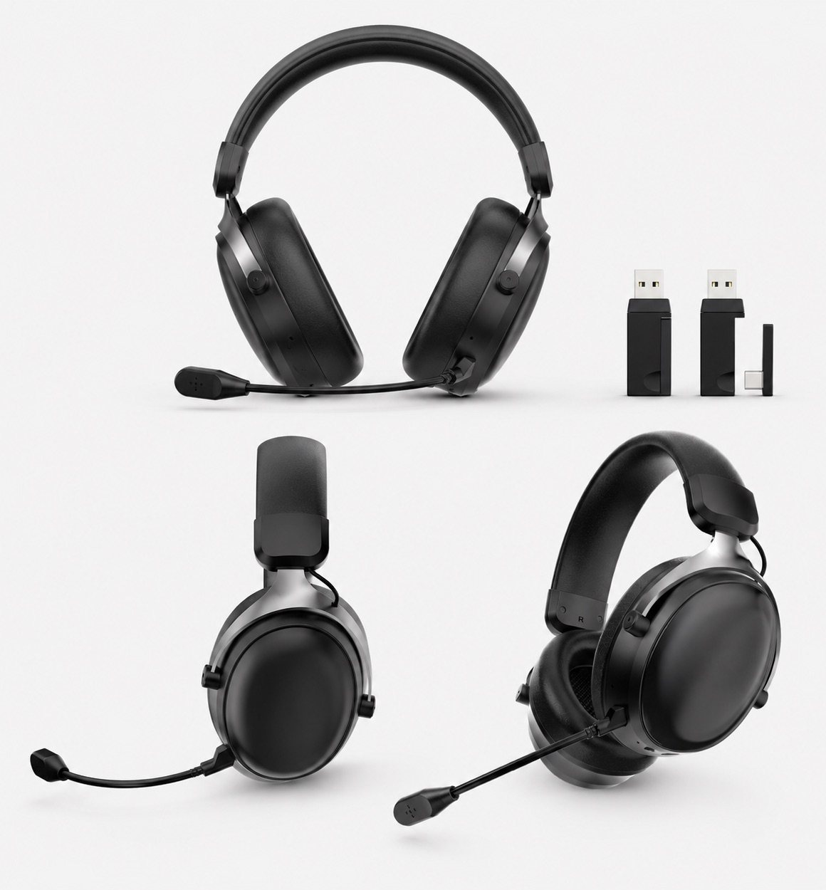

Connection and latency
Wired models are straightforward for stable connection. Wireless models should be reviewed by 2.4G direction, latency expectations and receiver setup.

Gaming headset guide
Connection type, latency, microphone structure, RGB styling, comfort and packaging direction all matter when comparing gaming headset model options.

Quick answer
Comparison points
Wired models are straightforward for stable connection. Wireless models should be reviewed by 2.4G direction, latency expectations and receiver setup.
Compare boom microphone position, flexibility, call clarity direction and whether the model fits gaming, streaming or office use.
RGB wired models can carry strong gaming visuals, while wireless models can support a cleaner, more premium product range.
Review headband shape, ear cushion size, wearing-angle photos and product images before requesting samples.
Continue comparing
Share the destination market, sales channel, wired or wireless direction, quantity range and sample timing for a focused comparison.